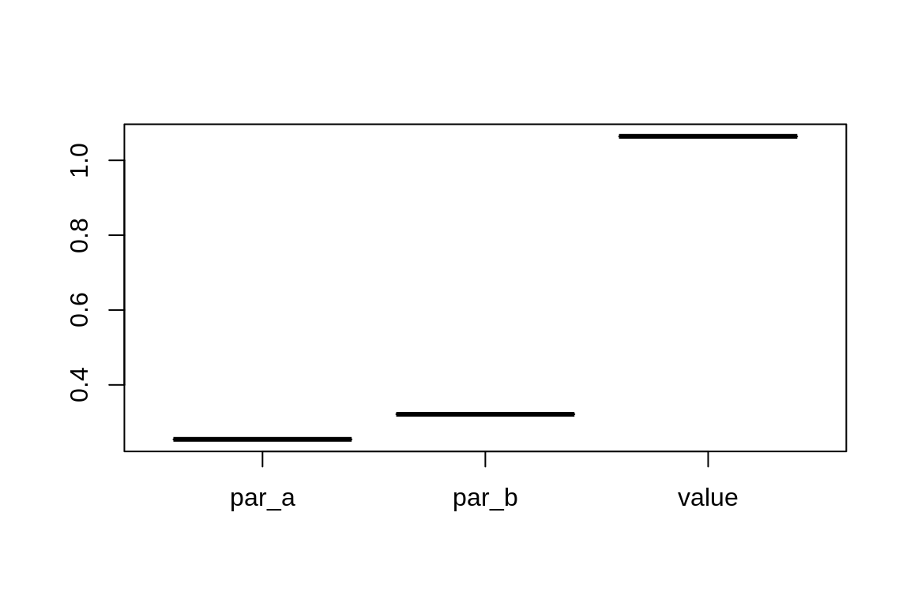
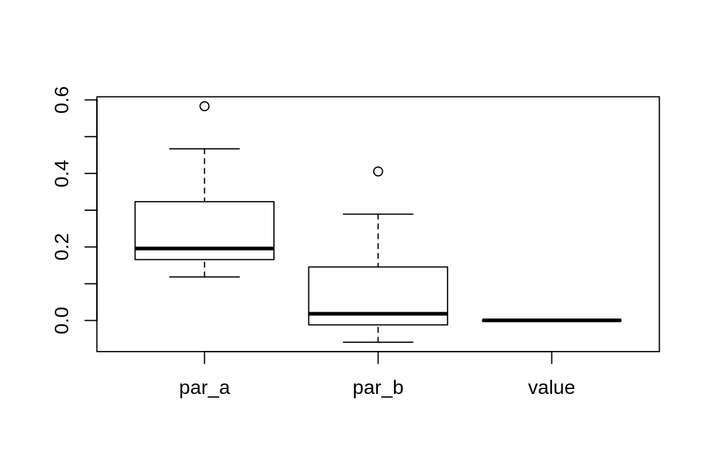

edma03-parametric.RmdThis section describes how to assess if SigmaK is estimable. We use a non-parametric model fit to begin with that has the estimate of the form matrix and the SigmaKstar matrix. The parametric estimation requires a pattern matrix that describes the unknowns in the SigmaK matrix. This SigmaK matrix is the variance covariance matrix describing the variances (diagonal) associated with each landmark, and the covariances (off-diagonal) among the landmarks.
The pattern matrix describes the unknowns in the SigmaK matrix:
The construction of the pattern matrix should be dome using biological reasoning. E.g. structural zeros can indicate that groups of landmarks might be correlated within the group, but not correlated among the groups.
This file can be created in R, or loaded as a csv or Excel (xls, xlsx) file:
library(EDMAinR)
#> EDMAinR 0.1-1 2020-02-16
matrix(
c("1", "2", NA, # row 1
"2", "1", NA, # row 2
NA, NA, "1"), # row 3
nrow=3, ncol=3, byrow=TRUE, # dimensions
dimnames=list(
c("a", "b", "c"), # row names
c("a", "b", "c") # column names
))
#> a b c
#> a "1" "2" NA
#> b "2" "1" NA
#> c NA NA "1"
## read in csv
read_pattern(system.file("extdata/example.csv", package="EDMAinR"))
#> a b c
#> a "1" "2" NA
#> b "2" "1" NA
#> c NA NA "1"
## read in xlsx
read_pattern(system.file("extdata/example.xlsx", package="EDMAinR"))
#> a b c
#> a "1" "2" NA
#> b "2" "1" NA
#> c NA NA "1"This example has 4 landmarks, a corresponding form matrix (M)
M <- structure(c(-2.5, 7.5, -2.5, -2.5, -7.5, 2.5, 2.5, 4.5),
.Dim = c(4L, 2L))
M
#> [,1] [,2]
#> [1,] -2.5 -7.5
#> [2,] 7.5 2.5
#> [3,] -2.5 2.5
#> [4,] -2.5 4.5The true SigmaK matrix will have no covariance terms (NAs), we will set the variances for the first two the same ("a"), and the and the variances for the other two the same too ("b"), the values for the parameters are stored in the parm vector (\(a = 0.25\), \(b = 0.35\)):
parm <- c(a=0.25, b=0.35)
m <- matrix(c(
"a", NA, NA, NA,
NA, "a", NA, NA,
NA, NA, "b", NA,
NA, NA, NA, "b"
), 4, 4, byrow=TRUE)Finally, the SigmaK matrix based on the parameter values and the pattern matrix:
SigmaK <- EDMAinR:::.vec2mat(parm, EDMAinR:::.mat2fac(m))
SigmaK
#> [,1] [,2] [,3] [,4]
#> [1,] 0.25 0.00 0.00 0.00
#> [2,] 0.00 0.25 0.00 0.00
#> [3,] 0.00 0.00 0.35 0.00
#> [4,] 0.00 0.00 0.00 0.35We can use M and SigmaK matrix to simulate 500 specimens:
sim <- edma_simulate_data(n=500, M, SigmaK)
sim
#> EDMA data: Simulated landmark data
#> 2 dimensions, 4 landmarks, 500 specimensThe following few lines set the dimension names for M and SigmaK:
dimnames(M) <- dimnames(sim$data[[1L]])
rownames(SigmaK) <- rownames(m) <- rownames(sim$data[[1L]])
colnames(SigmaK) <- colnames(m) <- rownames(sim$data[[1L]])Now we have everything we need to estimate the form matrix, SigmaKstar, and SigmaK.
The first step is to use the data set from our 500 simulated specimens and estimate mean form and SigmaKstar using the non-parametric estimation function edma_fit:
fit <- edma_fit(sim)
fit
#> EDMA nonparametric fit: Simulated landmark data
#> Call: edma_fit(x = sim)
#> 2 dimensions, 4 landmarks, 500 replicates, no bootstrapNow we estimate SigmaK using fit and the pattern matrix m as arguments for the SigmaK_fit function:
o <- SigmaK_fit(fit, m)
o
#> EDMA parametric fit: Simulated landmark data
#> Call: SigmaK_fit(object = fit, pattern = m)
#> 2 dimensions, 4 landmarks, 500 replicates, no bootstrapWe can compare the estimates with our known parameters, because we used simulation, thus we know the truth. This is not the case for real cases, but this way we can check if our methods work. These are the individual parameters that make up the SigmaK matrix:
And this is our estimated SigmaK matrix:
We use sensitivity analysis to check how well we can estimate SigmaK. We need to do this, because we want to make sure the optimization routine is finding the same solutions no matter what initial values we use. This indicates that the estimates are in fact identifiable.
To check the sensitivity using the aptly named sensitivity function. This function re-estimates the SigmaK matrix multiple times with random starting values for numerical optimization. The result is a matrix with estimates of each parameter as columns. The last column contains the value of the loss function (used in the optimization) evaluated at the parameter values in that row. The rows represent the original estimates and the 10 re-estimated sets of values. The number of replicates can be increased further:
s <- sensitivity(o, 10)
s
#> par_a par_b value
#> [1,] 0.2539084 0.3209651 0.0007728197
#> [2,] 0.2538729 0.3210012 0.0007728189
#> [3,] 0.2538583 0.3209854 0.0007728177
#> [4,] 0.2538704 0.3209634 0.0007728175
#> [5,] 0.2538549 0.3209625 0.0007728176
#> [6,] 0.2538258 0.3209865 0.0007728194
#> [7,] 0.2538159 0.3209421 0.0007728220
#> [8,] 0.2538349 0.3209740 0.0007728185
#> [9,] 0.2538266 0.3209903 0.0007728194
#> [10,] 0.2538954 0.3209989 0.0007728202
#> [11,] 0.2538312 0.3210041 0.0007728198When we look at the results and see that the estimates are very similar (5th digit differences), this indicates that the parameters are identifiable. We can do this via the summary function or by looking at the boxplot:
summary(s)
#> par_a par_b value
#> Min. :0.2538 Min. :0.3209 Min. :0.0007728
#> 1st Qu.:0.2538 1st Qu.:0.3210 1st Qu.:0.0007728
#> Median :0.2539 Median :0.3210 Median :0.0007728
#> Mean :0.2539 Mean :0.3210 Mean :0.0007728
#> 3rd Qu.:0.2539 3rd Qu.:0.3210 3rd Qu.:0.0007728
#> Max. :0.2539 Max. :0.3210 Max. :0.0007728
boxplot(s)
When estimates vary while the loss function value is the same, it is usually a sign of non-identifiability. Let’s see an example for this situation.
The simulation is very similar to the previous example. The only difference is that the pattern matrix has the "a" parameter describing the diagonal variance elements, the "b" parameter is put in all the off-diagonal cells, thus we have constant covariances:
parm <- c(a=0.25, b=0.07)
m <- matrix(c(
"a", "b", "b", "b",
"b", "a", "b", "b",
"b", "b", "a", "b",
"b", "b", "b", "a"
), 4, 4, byrow=TRUE)
SigmaK <- EDMAinR:::.vec2mat(parm, EDMAinR:::.mat2fac(m))
SigmaK
#> [,1] [,2] [,3] [,4]
#> [1,] 0.25 0.07 0.07 0.07
#> [2,] 0.07 0.25 0.07 0.07
#> [3,] 0.07 0.07 0.25 0.07
#> [4,] 0.07 0.07 0.07 0.25The rest of the simulation is the same as before:
sim <- edma_simulate_data(n=500, M, SigmaK)
dimnames(M) <- dimnames(sim$data[[1L]])
rownames(SigmaK) <- rownames(m) <- rownames(sim$data[[1L]])
colnames(SigmaK) <- colnames(m) <- rownames(sim$data[[1L]])Now let’s try to estimate SigmaK for a non identifiable pattern:
fit <- edma_fit(sim)
o <- SigmaK_fit(fit, m)
o
#> EDMA parametric fit: Simulated landmark data
#> Call: SigmaK_fit(object = fit, pattern = m)
#> 2 dimensions, 4 landmarks, 500 replicates, no bootstrapThe estimates are pretty far off from the true values:
cbind(true=parm, est=o$results$par)
#> true est
#> a 0.25 0.2871702
#> b 0.07 0.1096243
SigmaK(o)
#> L1 L2 L3 L4
#> L1 0.2871702 0.1096243 0.1096243 0.1096243
#> L2 0.1096243 0.2871702 0.1096243 0.1096243
#> L3 0.1096243 0.1096243 0.2871702 0.1096243
#> L4 0.1096243 0.1096243 0.1096243 0.2871702If we now do the sensitivity analysis, we see all kinds of estimates while all leading to the same loss function value. This a clear indication of non-estimability:
s <- sensitivity(o)
s
#> par_a par_b value
#> [1,] 0.2871702 0.10962428 0.0003358588
#> [2,] 0.4668093 0.28925612 0.0003358596
#> [3,] 0.1430023 -0.03452708 0.0003358583
#> [4,] 0.1883117 0.01077916 0.0003358582
#> [5,] 0.1958401 0.01830934 0.0003358582
#> [6,] 0.1949330 0.01739788 0.0003358583
#> [7,] 0.1184738 -0.05903101 0.0003358604
#> [8,] 0.2589918 0.08146353 0.0003358583
#> [9,] 0.3590700 0.18152654 0.0003358586
#> [10,] 0.1187325 -0.05879193 0.0003358584
#> [11,] 0.5828245 0.40531593 0.0003358599
summary(s)
#> par_a par_b value
#> Min. :0.1185 Min. :-0.05903 Min. :0.0003359
#> 1st Qu.:0.1657 1st Qu.:-0.01187 1st Qu.:0.0003359
#> Median :0.1958 Median : 0.01831 Median :0.0003359
#> Mean :0.2649 Mean : 0.08739 Mean :0.0003359
#> 3rd Qu.:0.3231 3rd Qu.: 0.14558 3rd Qu.:0.0003359
#> Max. :0.5828 Max. : 0.40532 Max. :0.0003359
boxplot(s)
Parametric estimation of SigmaK involves the following steps:
edma_fit function,SigmaK_fit to estimate SigmaK using the non-parametric fit and the pattern matrix,sensitivity analysis.parm <- c(a=0.25, b=0.07, c=0.1, d=0.15)
m <- matrix(c(
"a", NA, NA, NA,
NA, "b", NA, NA,
NA, NA, "c", NA,
NA, NA, NA, "d"
), 4, 4, byrow=TRUE)
parm <- c(a=0.25)
m <- matrix(c(
"a", NA, NA, NA,
NA, "a", NA, NA,
NA, NA, "a", NA,
NA, NA, NA, "a"
), 4, 4, byrow=TRUE)
parm <- c(a=0.25, b=0.01, c=0.1)
m <- matrix(c(
"a", "b", NA, NA,
"b", "a", NA, NA,
NA, NA, "c", "b",
NA, NA, "b", "c"
), 4, 4, byrow=TRUE)
parm <- c(a=0.25, b=0.07)
m <- matrix(c(
"a", "b", "b", "b",
"b", "a", "b", "b",
"b", "b", "a", "b",
"b", "b", "b", "a"
), 4, 4, byrow=TRUE)
SigmaK <- EDMAinR:::.vec2mat(parm, EDMAinR:::.mat2fac(m))
SigmaK
#> [,1] [,2] [,3] [,4]
#> [1,] 0.25 0.07 0.07 0.07
#> [2,] 0.07 0.25 0.07 0.07
#> [3,] 0.07 0.07 0.25 0.07
#> [4,] 0.07 0.07 0.07 0.25
sim <- edma_simulate_data(n=500, M, SigmaK)
dimnames(M) <- dimnames(sim$data[[1L]])
rownames(SigmaK) <- rownames(m) <- rownames(sim$data[[1L]])
colnames(SigmaK) <- colnames(m) <- rownames(sim$data[[1L]])
fit <- edma_fit(sim)
try(SigmaK_fit(fit, m))
#> EDMA parametric fit: Simulated landmark data
#> Call: SigmaK_fit(object = fit, pattern = m)
#> 2 dimensions, 4 landmarks, 500 replicates, no bootstrap
o <- SigmaK_fit(fit, m, method="SANN")
cbind(true=parm, est=o$results$par)
#> true est
#> a 0.25 0.4574372
#> b 0.07 0.2670822
SigmaK(o)
#> L1 L2 L3 L4
#> L1 0.4574372 0.2670822 0.2670822 0.2670822
#> L2 0.2670822 0.4574372 0.2670822 0.2670822
#> L3 0.2670822 0.2670822 0.4574372 0.2670822
#> L4 0.2670822 0.2670822 0.2670822 0.4574372
s <- sensitivity(o)
s
#> par_a par_b value
#> [1,] 0.4574372 0.2670822 0.0005072810
#> [2,] 1.2330377 1.0426229 0.0005072637
#> [3,] 1.1277835 0.9373566 0.0005072628
#> [4,] 0.3960654 0.2055129 0.0005073055
#> [5,] 1.7358208 1.5454196 0.0005072657
#> [6,] 5.4261897 5.2355979 0.0005073383
#> [7,] 5.2039384 5.0134294 0.0005072800
#> [8,] 11.2759342 11.0855068 0.0005072628
#> [9,] 5.0071493 4.8166630 0.0005072712
#> [10,] 2.9753813 2.7850310 0.0005072832
#> [11,] 2.3966328 2.2061435 0.0005072722
summary(s)
#> par_a par_b value
#> Min. : 0.3961 Min. : 0.2055 Min. :0.0005073
#> 1st Qu.: 1.1804 1st Qu.: 0.9900 1st Qu.:0.0005073
#> Median : 2.3966 Median : 2.2061 Median :0.0005073
#> Mean : 3.3850 Mean : 3.1946 Mean :0.0005073
#> 3rd Qu.: 5.1055 3rd Qu.: 4.9150 3rd Qu.:0.0005073
#> Max. :11.2759 Max. :11.0855 Max. :0.0005073